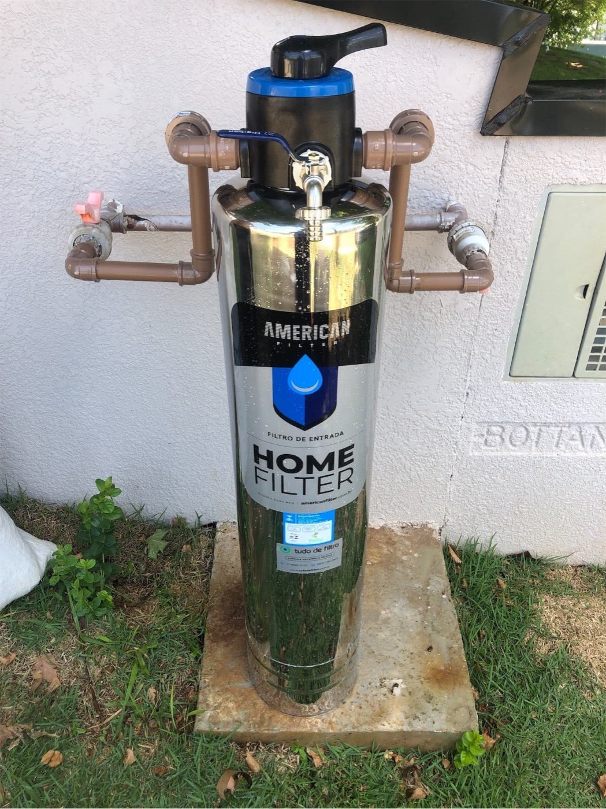
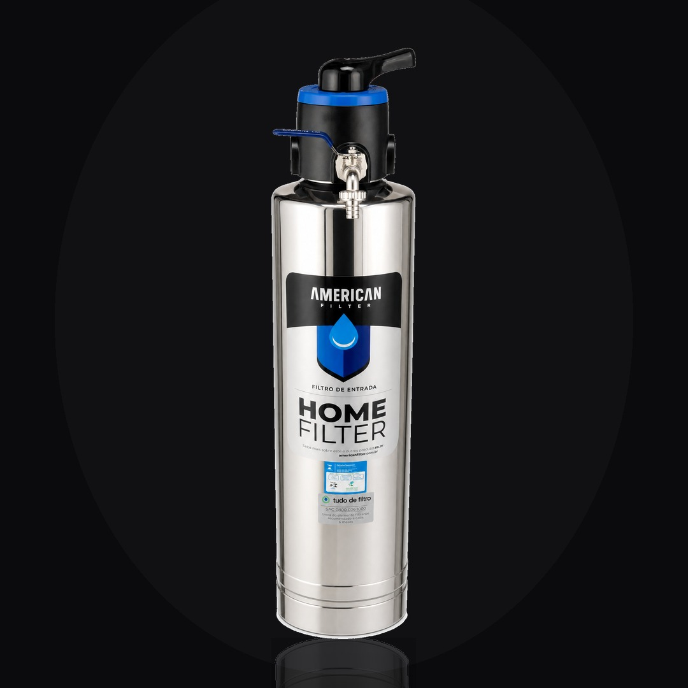
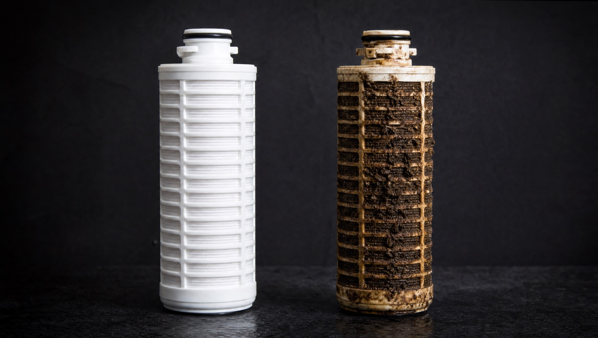
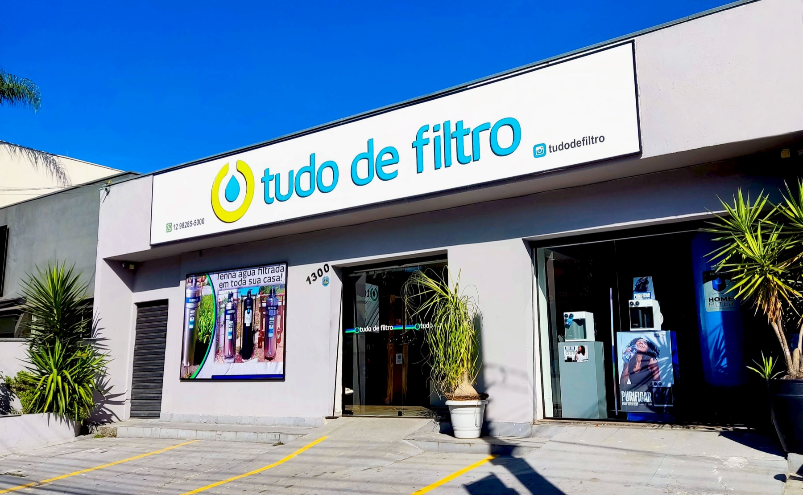
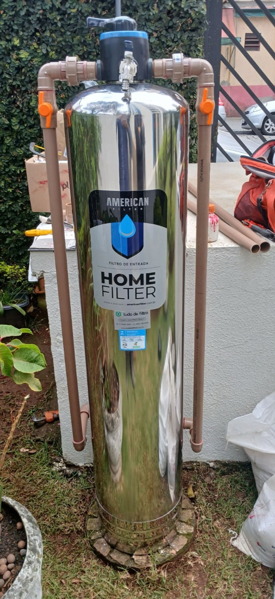
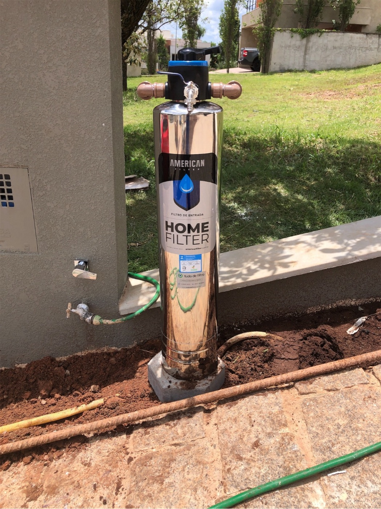
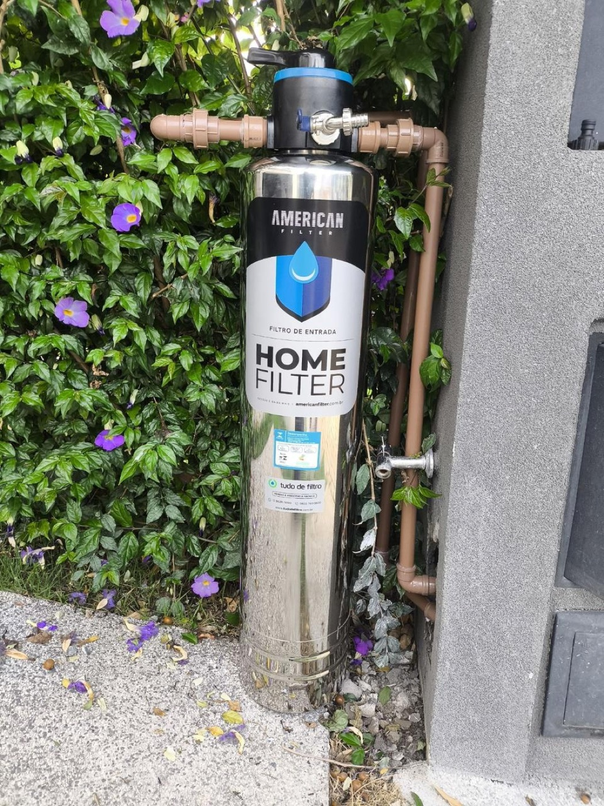

Eleve o nível
da sua água.
Especialistas em soluções completas para tratamento de água — da residência à indústria. Há mais de 38 anos.
São José dos Campos · SP
+8.000 clientes atendidos
O que você vai encontrar
Um panorama completo de quem somos, do que fazemos e de por que milhares de famílias e empresas confiam na Tudo de Filtro.
Há 38 anos, cuidando da água de quem confia em nós.
A Tudo de Filtro nasceu de uma convicção simples: todos merecem água de qualidade. Desde então, transformamos essa crença em projetos, instalações e manutenções que melhoram a água de residências, comércios e indústrias em toda a região.
Mais do que vender filtros, somos uma empresa de soluções completas em tratamento de água: diagnosticamos, indicamos a tecnologia certa, instalamos com equipe própria e acompanhamos o cliente no pós-venda. Tudo com a seriedade de quem construiu reputação ao longo de quase quatro décadas.

Experiência que se constrói em décadas, não em meses.
A água muda. A tecnologia evolui. O que permanece é o compromisso de entregar a melhor solução para cada cliente — e foi isso que nos manteve relevantes por mais de 38 anos.
A origem · especialistas em filtragem
Começamos como referência em filtros e purificadores, atendendo famílias que buscavam água de melhor qualidade em casa.
Expansão para serviços
Agregamos instalação, manutenção e assistência técnica multimarca — passando a cuidar do equipamento durante toda a sua vida útil, de qualquer marca do mercado.
Da casa à indústria
Desenvolvemos soluções para água de poço, água dura, ozônio e bebedouros industriais, atendendo condomínios, comércios e grandes plantas industriais.
Hoje · soluções completas
Reunimos produto, projeto, instalação e pós-venda em um só lugar. Mais de 8.000 clientes já elevaram o nível da própria água conosco.
Água de qualidade para toda a casa — e para todo o trabalho.
Missão
Ajudar famílias, empresas e comércios a melhorarem a qualidade da sua água, unindo experiência e atenciosidade com qualidade e inovação.
Visão
Ser a referência regional em soluções completas de tratamento de água, reconhecida pela confiança, pela competência técnica e pelo cuidado com cada cliente.
Valores
Confiança, transparência e excelência técnica. Atendimento próximo, soluções honestas e suporte que não termina na venda.
Acreditamos que a qualidade de vida começa em algo que muitos ignoram: a água que corre nas torneiras todos os dias. Cuidar dela é cuidar das pessoas.
Seis razões para confiar a sua água a quem entende do assunto.
Quase 4 décadas de experiência
Mais de 38 anos resolvendo problemas de água dos mais simples aos mais complexos. Experiência que se traduz em diagnóstico certeiro.
Solução completa em um só lugar
Produto, projeto, instalação e manutenção. Você não precisa de cinco fornecedores — precisa de um parceiro.
Assistência técnica multimarca
Atendemos filtros e purificadores de todas as marcas do mercado, com mão de obra especializada e peças originais.
Equipe própria, não terceirizada
Quem te atende, projeta e instala faz parte da nossa casa. Responsabilidade do começo ao fim.
Atendimento próximo e consultivo
Um especialista entende o seu caso antes de indicar qualquer solução. Sem empurrar produto — resolvendo o problema certo.
Suporte que continua depois da venda
Acompanhamento, lembretes de troca e manutenção programada. A gente avisa, vai até você e faz a troca.
A confiança de quem
construiu reputação.
Não falamos de água por improviso. Falamos por experiência acumulada, cliente após cliente, instalação após instalação.
Para cada água,
uma solução certa.
Nenhuma água é igual à outra. Por isso, oferecemos um portfólio completo — da torneira da cozinha à entrada de uma indústria.
Filtro de Entrada
American Filter
Um único filtro na entrada da casa. Toda a água tratada — em cada torneira, chuveiro e eletrodoméstico.
O American Filter retém sedimentos, ferrugem e impurezas sólidas antes que cheguem ao seu dia a dia. O resultado é água mais limpa no banho, na cozinha e no consumo — e proteção real para o que está por trás das paredes.
Protege a casa inteira
Caixa d'água, máquina de lavar, aquecedores, purificadores e todo o sistema hidráulico.
Alta vazão, sem perda de pressão
Você filtra a água sem sacrificar o jato do chuveiro.

Por dentro do American Filter
Nem todo filtro de entrada é igual. O nosso reúne, em um só produto, características que dificilmente se encontram juntas no Brasil.
Corpo em aço inox 304 com banho de níquel
Unido por solda a laser interna — por fora, sem rebarbas e sem emendas. Acabamento perfeitamente liso e durável.
Elementos de quartzo + zeólita
Cristais de alta performance que retêm sedimentos até 10× menores que um fio de cabelo. Troca dos elementos só a cada 3 anos.
Crepinas de alta vazão
A menor perda de pressão do mercado — filtragem sem comprometer o conforto da água.
Válvula com by-pass integrado
Manutenção simples sem interromper o abastecimento. Versão com válvula automática Runxin opcional.

Tratamento de
Água de Poço · Iron Free
Água de poço com ferro, manganês, enxofre ou taninos? O Iron Free trata na fonte, antes que o problema chegue à sua casa.
Por oxidação e filtragem natural — sem sal e sem produtos químicos — o sistema elimina sabores, odores e manchas, protegendo encanamentos, eletrodomésticos e o conforto de toda a família.

Sem manchas
Acaba com manchas em pias, louças, roupas e vasos sanitários.
Baixa manutenção
Sem sal, sem químicos. Vida útil do elemento de 2 a 3 anos.
1.500 a 3.500 L/h
Capacidades padrão e projetos customizados conforme a análise da água.
Abrandador de
Água Dura · Scale Stop
Água dura entope encanamentos, mancha vidros e reduz a vida útil de aquecedores, boilers e máquinas. O Scale Stop resolve isso com a tecnologia TAC — Template Assisted Crystallization.
Transforma o calcário em microcristais
O cálcio e o magnésio viram cristais estáveis que não aderem às superfícies — e seguem suspensos na água.
Sem sal, sem regeneração química
Não gera efluente salino. Ecologicamente sustentável e de baixíssima manutenção (mídia a cada 3–6 anos).
Preserva os minerais benéficos
Combate a incrustação sem desmineralizar a água.
Onde aplicar
Complementar ao filtro de entrada: enquanto um retém os sólidos, o outro impede a incrustação. Juntos, protegem toda a instalação hidráulica.
Filtragem
com Ozônio
Para quem busca um nível superior de tratamento, a filtragem com ozônio age na qualidade da água de forma avançada — combatendo odores, sabores e impurezas com uma das tecnologias mais reconhecidas do setor.
Ação avançada
Tratamento de alto desempenho para água com exigências mais rigorosas de qualidade.
Sem sabor e sem odor
Reduz gostos e cheiros indesejados, entregando água mais agradável no consumo.
Projeto sob medida
Dimensionado conforme a sua necessidade — residencial, comercial ou industrial.
Purificadores
de Água
Água tratada, gelada e na hora — direto no ponto de consumo. Trabalhamos com purificadores de diversas marcas, para residências, escritórios e comércios.
E o melhor: além de vender, cuidamos. Fazemos a instalação, a troca de refil e a assistência técnica do seu purificador — seja ele da nossa loja ou não.
O que oferecemos
Venda de purificadores
As principais marcas do mercado.
Instalação especializada
Com equipe própria e segura.
Troca de refil & manutenção
De qualquer marca, no prazo certo.
Bebedouros
Industriais
Onde muita gente precisa de água o tempo todo, o bebedouro certo faz diferença. Soluções robustas em aço inox, para alta demanda de consumo em ambientes coletivos.
Para ambientes coletivos
Indústrias, fábricas, galpões, escolas, academias, clínicas, clubes e estabelecimentos comerciais de grande circulação.
Robusto e higiênico
Construção em aço inox, fácil de higienizar e dimensionada para suportar uso intenso ao longo do dia.
Capacidade sob medida
Diferentes capacidades e quantidades de torneiras conforme o número de pessoas a atender.
Com manutenção garantida
Instalação, troca de refil e assistência técnica feitas pela nossa equipe. Água sempre disponível.
Refis & Manutenção
Multimarca
Um filtro só protege se o refil estiver em dia. Por isso, mantemos um dos serviços mais completos da região: refis e manutenção para filtros e purificadores de todas as marcas.
Refil de qualquer marca
Encontramos o refil certo para o seu equipamento, mesmo que não tenha sido comprado conosco.
Assistência técnica especializada
Mão de obra qualificada e peças originais. Diagnóstico honesto do que o seu equipamento realmente precisa.
Programa de troca programada
Nós lembramos, avisamos e fazemos a troca para você — no prazo certo, sem você precisar controlar nada.
A gente liga, avisa e faz a troca por você. Seu filtro sempre no ponto certo — sem dor de cabeça.
Da primeira conversa à água tratada.
Um método claro, consultivo e sem surpresas — do diagnóstico ao acompanhamento de longo prazo.
Diagnóstico
Um especialista entende a sua água, a origem (rua, poço, mina), o consumo e os problemas que você enfrenta.
Projeto & indicação
Recomendamos a solução certa para o seu caso — nem mais, nem menos do que você precisa — com transparência de preço e condições.
Instalação
Nossa equipe própria instala com segurança e acabamento limpo, no prazo combinado.
Suporte & manutenção
Acompanhamos o equipamento, lembramos das trocas e cuidamos da assistência técnica por toda a vida útil.
Da torneira de casa ao chão de fábrica.
A mesma seriedade técnica, em qualquer escala de necessidade.
Residências
Famílias que querem água de qualidade em todas as torneiras.
Condomínios
Água filtrada para o prédio inteiro, protegendo a instalação coletiva.
Indústrias
Tratamento robusto para processos, equipamentos e consumo.
Comércio & serviços
Restaurantes, escritórios e lojas com água sempre adequada.
Saúde & clínicas
Padrões exigentes de qualidade da água para o atendimento.
Hotelaria & coletivos
Hotéis, academias, escolas e clubes de alta circulação.
O que nos torna
uma escolha segura.
Não vendemos só equipamentos. Entregamos tranquilidade — a certeza de que a sua água está em boas mãos por muitos anos.
Tudo o que a sua água precisa, com um só parceiro.
A maior comodidade não está em um produto — está em não precisar se preocupar com nada depois dele.
Atendimento por WhatsApp
Fale direto com um especialista, tire dúvidas e resolva seu caso sem burocracia.
Equipe técnica própria
Quem te atende é quem te instala e te dá suporte. Responsabilidade ponta a ponta.
Troca programada
Avisamos quando chega a hora, agendamos e fazemos a troca por você.
Assistência multimarca
Cuidamos do seu equipamento mesmo que ele seja de outra marca ou loja.

Nosso Showroom
Conheça nossa estrutura e descubra de perto as soluções completas em tratamento de água.
Na Tudo de Filtro, acreditamos que a melhor experiência começa antes mesmo da instalação. Nosso showroom foi criado para que clientes residenciais, empresas, condomínios e indústrias conheçam os equipamentos, comparem soluções e recebam uma consultoria especializada para encontrar o sistema ideal.
Aqui você encontra atendimento técnico, demonstração de equipamentos e uma equipe preparada para orientar — do pequeno projeto residencial às grandes aplicações comerciais e industriais.

Vila Ema
Seg–Sex 8h–18h · Sáb 8h–13h
Mais do que vender equipamentos, criamos soluções completas para garantir água de qualidade, segurança e tranquilidade para nossos clientes.
Empresas que confiam
a sua água a nós.
De indústrias globais a instituições locais, organizações de diferentes setores escolheram a Tudo de Filtro para tratar a água onde ela é essencial.
Confiança que se mede em nomes.
Algumas das empresas que já trataram a sua água com a Tudo de Filtro.

Clientes com negócios concluídos junto à Tudo de Filtro. Marcas e logotipos pertencem aos seus respectivos titulares.
Projetos reais, água tratada de verdade.


Residencial
Filtro de entrada com acabamento limpo, integrado à fachada.
Condomínio
Água tratada para o prédio inteiro, na entrada de abastecimento.
Industrial
Sistemas de maior porte para alta vazão e demanda contínua.
Em 38 anos, aprendemos que a maior tecnologia que oferecemos não é um filtro. É a confiança de saber que, do diagnóstico ao pós-venda, alguém de verdade está cuidando da sua água.
O que você precisa saber.
P. Vocês atendem equipamentos de outras marcas?
Sim. Somos especialistas em assistência técnica multimarca — vendemos, instalamos e damos manutenção em filtros e purificadores de todas as marcas do mercado.
P. Minha água é de poço. Vocês tratam?
Sim. Nossa linha Iron Free trata água de poço, mina e rio, removendo ferro, manganês, enxofre e taninos — sem sal e sem produtos químicos.
P. Qual a diferença entre filtro de entrada e abrandador?
O filtro de entrada retém sedimentos e impurezas sólidas; o abrandador combate a água dura (calcário). São complementares e, juntos, protegem toda a instalação hidráulica.
P. Vocês instalam ou só vendem o produto?
Cuidamos de tudo: diagnóstico, projeto, instalação com equipe própria e manutenção. Você tem um só parceiro do início ao fim.
P. Como funciona a troca de refil?
Temos um programa de manutenção programada: avisamos quando chega a hora, agendamos e fazemos a troca por você — de qualquer marca.
P. Atendem fora de São José dos Campos?
O atendimento presencial cobre o Vale do Paraíba. Para outras regiões, enviamos nossos produtos para todo o Brasil com suporte à distância.
Vamos elevar o nível
da sua água?
Conte o seu caso para um especialista. A gente entende a sua água e indica a solução certa — sem compromisso.
Tudo de Filtro
Especialistas em soluções completas para tratamento de água. Há mais de 38 anos.
Eleve o nível da sua água.
Para todas as suas necessidades de água,
a Tudo de Filtro é a solução.
© 2026 Tudo de Filtro · São José dos Campos · SP · tudodefiltro.com.br